Informe de la prueba técnica hecha por Nicolás Cordano
En esta prueba técnica utilice Selenium con Python, ademas de incorporar frameworks como Behave, Unittest y HtmlTestRunner,
los cuales se encuentran en el archivo "fw.py". El webdriver corre con el navegador Google Chrome. En el archivo "objects.py" se encuentran los Page Objects y también los Users utilizados para las pruebas.
En la parte de reports apareceran los reportes de cada run del Test Case seleccionado.
En este paso lo que se verifica
es que estamos correctamente ubicados en la pantalla de registro de usuarios
mediante un explicit wait el cual se busca que el titulo de la página de registro de usuarios
sea el mismo que estamos validando. Aca esperamos hasta 10 segundos, si no se logra identificar
entonces el test falla.
When - Then
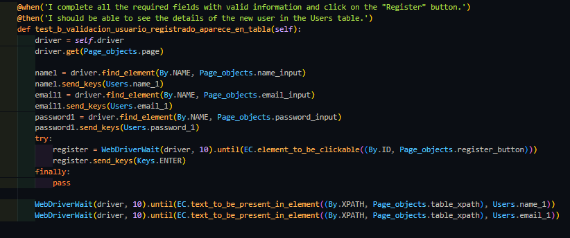
En estos pasos lo que se verifica es que una vez completados los campos de registro con datos validos
estos mismos se puedan visualizar en la tabla de usuarios registrados. Acá lo que se realiza
es el registro de usuarios y mediante un "try" se busca con un explicit wait que el boton de registro
se encuentre y sea clickeable, una vez conseguido esto se procede a oprimir el boton.
SEGUNDO CASO DE PRUEBA
Given
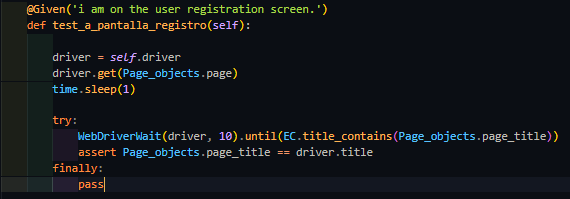
En este paso nuevamente lo que se verifica
es que estamos correctamente ubicados en la pantalla de registro de usuarios
mediante un explicit wait el cual se busca que el titulo de la página de registro de usuarios
sea el mismo que estamos validando. Aca esperamos hasta 10 segundos, si no se logra identificar
entonces el test falla.
When
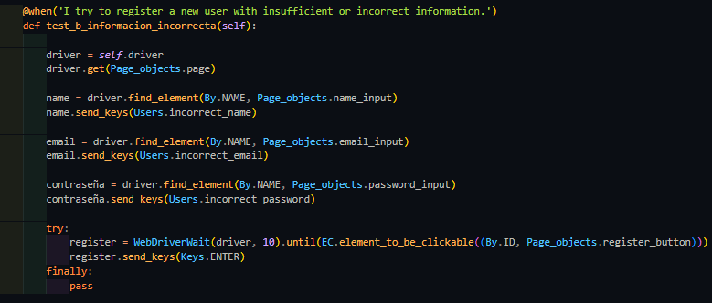
En este paso se ingresan datos incorrectos en los campos de registro de usuarios. Mediante un explicit wait
lo que se busca es que una vez encontrado el boton de registro, lo ejecutamos para que aparezcan los mensajes de error.
Then
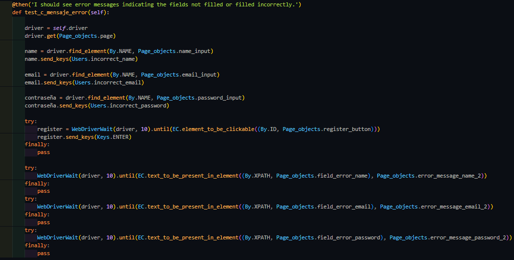
En este paso una vez ingresados los datos incorrectos en los campos de registro de usuarios, validamos mediante un explicit await
que los mensajes de error "Por favor, insira um nome completo.", "Por favor, insira um e-mail válido.", "A senha deve conter ao menos 8 caracteres."
aparezcan acorde a la funcionalidad dada.
TERCER CASO DE PRUEBA
Given
En este paso nuevamente lo que se verifica
es que estamos correctamente ubicados en la pantalla de registro de usuarios
mediante un explicit wait, el cual se busca que el titulo de la página de registro de usuarios
sea el mismo que estamos validando. Aca esperamos hasta 10 segundos, si no se logra identificar
entonces el test falla.
When - Then
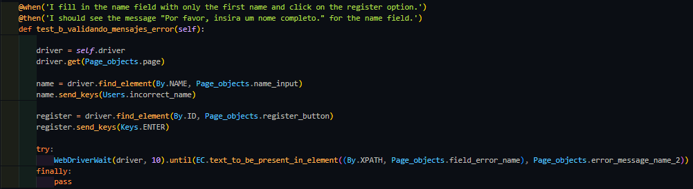
En estos pasos ingresamos un nombre de manera incorrecta (en este caso un solo nombre, cuando lo que se pide son dos nombres),
y tiene que aparecer el mensaje de error "Por favor, insira um nome completo.". Nuevamente lo validamos mediante un explicit await donde buscamos
que dicho error aparezca en pantalla.
Then
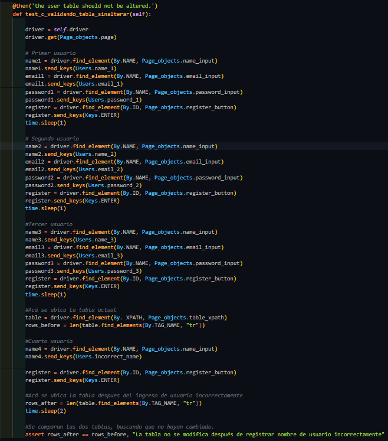
En este paso se realiza el registro de tres usuarios y se verifica la cantidad de filas en la tabla utilizando la función 'len' para obtener este valor.
Posteriormente, se registra un nuevo usuario (de manera incorrecta) y se realiza una verificación adicional para asegurar que la tabla no haya sido modificada (mediante un 'assert').
Este proceso valida que la tabla permanece inalterada cuando un usuario se intenta registrar con un nombre incorrecto que provoca un mensaje de error en el login.
CUARTO CASO DE PRUEBA
Given
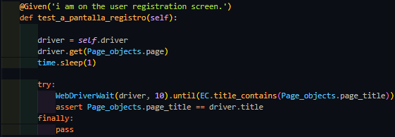
En este paso nuevamente lo que se verifica
es que estamos correctamente ubicados en la pantalla de registro de usuarios
mediante un explicit wait el cual se busca que el titulo de la página de registro de usuarios
sea el mismo que estamos validando. Aca esperamos hasta 10 segundos, si no se logra identificar
entonces el test falla.
When
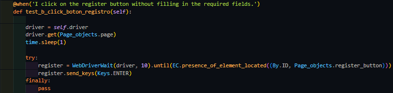
En este paso se hace click en el boton de registro sin haber completado ningun campo de registro.
Then
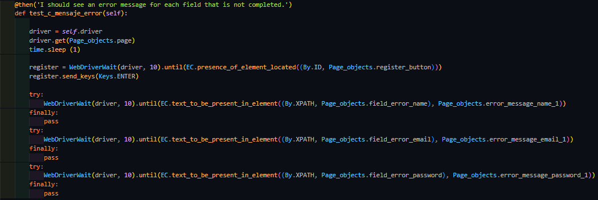
Este paso valida la acción de hacer clic en el botón de registro sin completar ningún campo.
Se verifica que aparezcan los mensajes de error específicos, tales como: 'O campo Nome é obrigatório.', 'O campo E-mail é obrigatório.', 'O campo Senha é obrigatório.'
Esto se realiza mediante un 'explicit await', asegurando que los mensajes de error aparezcan de manera adecuada.
QUINTO CASO DE PRUEBA
Given - When - Then
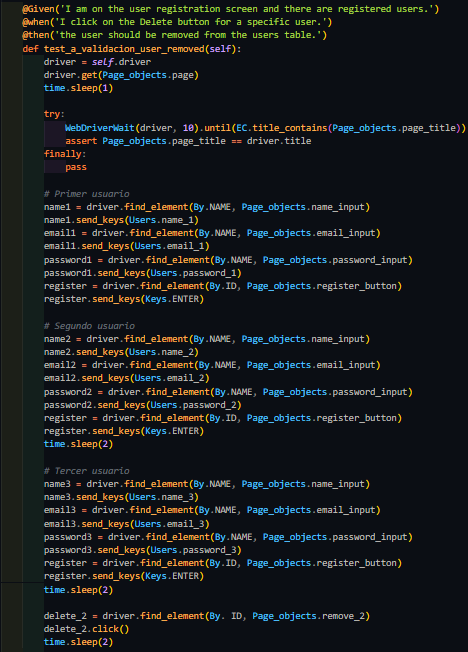
Estos pasos validan la funcionalidad del botón 'Eliminar usuario' a través del registro de tres usuarios.
Durante este proceso, se registran tres usuarios en la plataforma, y luego se elimina específicamente el segundo usuario.
Este procedimiento asegura que, tras la eliminación, solamente queden registrados el primer y tercer usuario en la plataforma.
SEXTO CASO DE PRUEBA
Given - When - Then
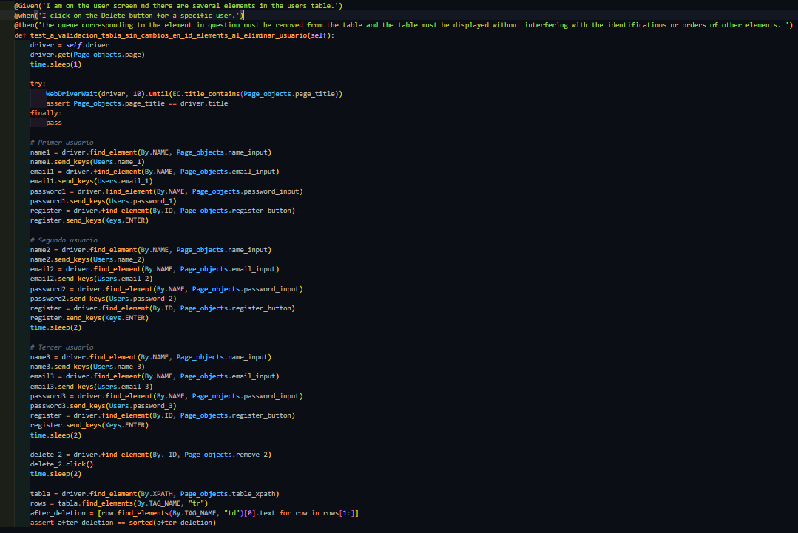
Estos pasos validan que al haber tres usuarios registrados y eliminar el segundo usuario, no se altere el orden de las identificaciones de los usuarios.
Esto se verifica mediante un proceso de comparación, el cual se utiliza un assert para confirmar que los datos en las celdas (td) de la tabla permanezcan igualmente ordenados después de la eliminación.
Este cálculo se realiza comparando la tabla original con una versión ordenada de la misma.